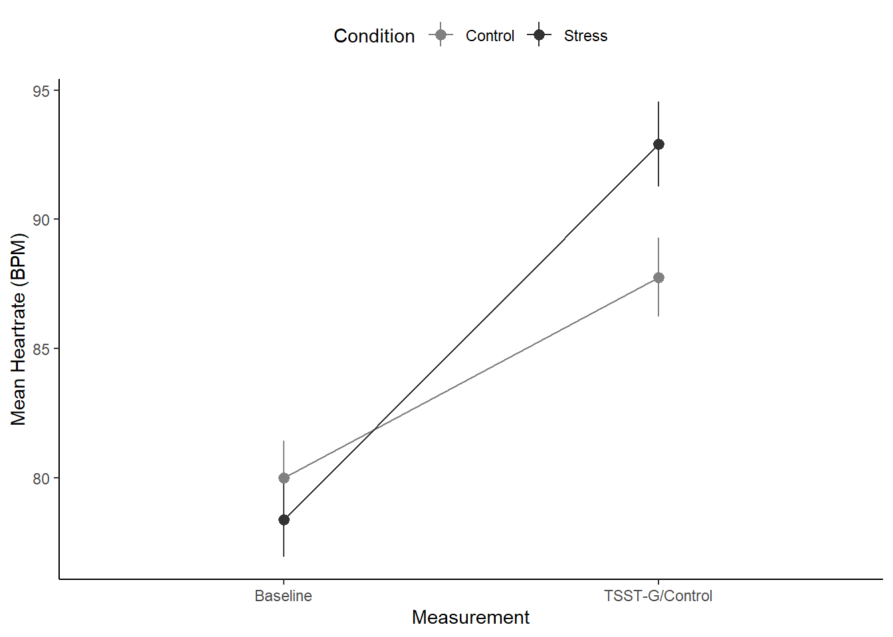

1 + 1[1] 2Quarto enables you to weave together content and executable code into a finished document. To learn more about Quarto see https://quarto.org.
When you click the Render button a document will be generated that includes both content and the output of embedded code. You can embed code like this:
1 + 1[1] 2You can add options to executable code like this
[1] 4The echo: false option disables the printing of code (only output is displayed).
The sum of 1 + 1 is 2.
This is a string in R
library(tidyverse)── Attaching core tidyverse packages ──────────────────────── tidyverse 2.0.0 ──
✔ dplyr 1.1.4 ✔ readr 2.1.4
✔ forcats 1.0.0 ✔ stringr 1.5.1
✔ ggplot2 3.5.1 ✔ tibble 3.2.1
✔ lubridate 1.9.3 ✔ tidyr 1.3.0
✔ purrr 1.0.2
── Conflicts ────────────────────────────────────────── tidyverse_conflicts() ──
✖ dplyr::filter() masks stats::filter()
✖ dplyr::lag() masks stats::lag()
ℹ Use the conflicted package (<http://conflicted.r-lib.org/>) to force all conflicts to become errorslibrary(BayesFactor)Loading required package: coda
Loading required package: Matrix
Attaching package: 'Matrix'
The following objects are masked from 'package:tidyr':
expand, pack, unpack
************
Welcome to BayesFactor 0.9.12-4.7. If you have questions, please contact Richard Morey (richarddmorey@gmail.com).
Type BFManual() to open the manual.
************#Read data
df <- read_csv("data/processed/preprocessed-GARP-TSST-data.csv")Rows: 144 Columns: 211
── Column specification ────────────────────────────────────────────────────────
Delimiter: ","
chr (5): Condition, Sex, Snack_UG, Snack_G, Education
dbl (204): VPN, PANAS1_1, PANAS1_2, PANAS1_3, PANAS1_4, PANAS1_5, PANAS1_6,...
dttm (1): Wakeup_Time
date (1): Date
ℹ Use `spec()` to retrieve the full column specification for this data.
ℹ Specify the column types or set `show_col_types = FALSE` to quiet this message.#Convert df to long-format
df_long <- df %>%
pivot_longer(cols = c(HR_Baseline_Average, HR_TSST_Average),
names_to = "Measurement",
values_to = "HR")
#Drop missing values
df_long <- df_long %>% drop_na(HR)
#Make sure columns are coded as factors for analysis
df_long$VPN <- as.factor(df_long$VPN)
df_long$Measurement <- as.factor(df_long$Measurement)
df_long$Condition <- as.factor(df_long$Condition)
#Bayesian Analysis
BF <- anovaBF(formula = HR ~ Measurement*Condition + VPN,
data = df_long,
whichRandom = "VPN")Warning: data coerced from tibble to data frame#Evidence for interaction term
BF_interaction <- BF[4]/BF[3]
BF_interactionBayes factor analysis
--------------
[1] Condition + Measurement + Condition:Measurement + VPN : 341.1671 ±4.52%
Against denominator:
HR ~ Condition + Measurement + VPN
---
Bayes factor type: BFlinearModel, JZS#Summarize to mean / SEM for plot
df_long2 <- df_long %>%
group_by(Measurement, Condition) %>%
summarize(mean_value = mean(HR, na.rm = T),
sem = sd(HR, na.rm = T)/sqrt(n()))`summarise()` has grouped output by 'Measurement'. You can override using the
`.groups` argument.#Create plot
plot <- ggplot(df_long2, aes(Measurement, mean_value, group = Condition, color = Condition)) +
geom_pointrange(aes(ymin=mean_value-sem, ymax= mean_value+sem)) +
geom_line() +
theme_classic() +
scale_x_discrete(labels = c("Baseline",
"TSST-G/Control")) +
ylab("Mean Heartrate (BPM)") +
scale_colour_grey(start = 0.5, end = 0.2) +
theme(legend.position = "top")
#Print and save plots
plot
#ggsave("output/heartrate.pdf", plot, width = 4, height = 3)